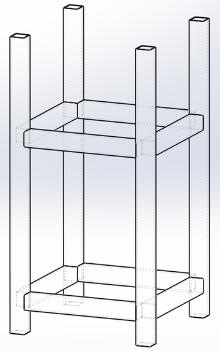
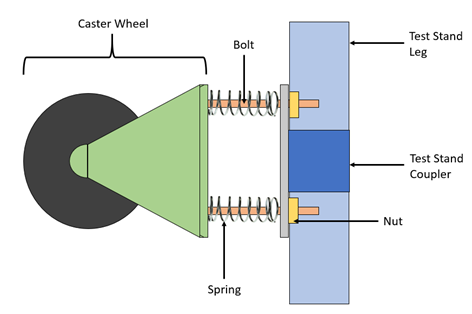

The uOttawa Rocketry team wanted to re-design the rocket motor test stand due to the problems we faced while testing on it. The problems were that the weight was too heavy so transporting it was difficult. The test stand was made as a proprietary portion to our first hybrid engine (which I’ve detailed in this post), so any subsequent motors would not fit inside it. Lastly since we used a horizontal orientation for the stand it posed two issues. The first was that we were not able to get accurate thrust measurements due to frictional and gravitational losses form the linear rail system the motor was mounted to. Secondly, the stand was at risk of tipping over due to the moment created by thrust from the exit velocity of the nozzle.
My colleagues and I worked to design a new test stand that would resolve the issues mentioned previously. Our focus was to make this one vertically oriented and accommodable to different diameter motors. Below is a rough schematic of what the test stand would look like. The blue “U” shaped structure is the test stand. It’s basically an upside-down table with four legs sticking up. At the bottom we could place a load sensor and this way we could get much more accuracy in measuring thrust. A mechanism would also have to be designed to keep the motor in upright position and allow to be adjustable.
The stand would have to be sturdy and strong to accommodate large forces so therefore we decided to use steel. Square steel bars (1.5’ x 1.5’) were bought and cut to different sizes. The legs were 30’ in height and we used eight coupler bars (12’) to hold the legs together. We joined them by welding. The following SolidWorks image shows the legs and couplers welded together
Next a slab of sheet metal was cut to the appropriate size to be welded at the base to provide a platform for the motor to rest on and the load cell to be fastened to.
The next step was to configure the stand such it can accommodate different sized motors. We bought caster wheels from home depot and bought M-28 bolts (which would fit in the caster wheel mounting holes), accompanying nuts and a set of eight springs larger than the M-28’s. The following is the schematic of our design.
After manufacturing all the components and assembling them together the final result can be seen in the following picture